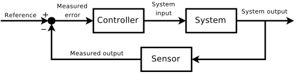
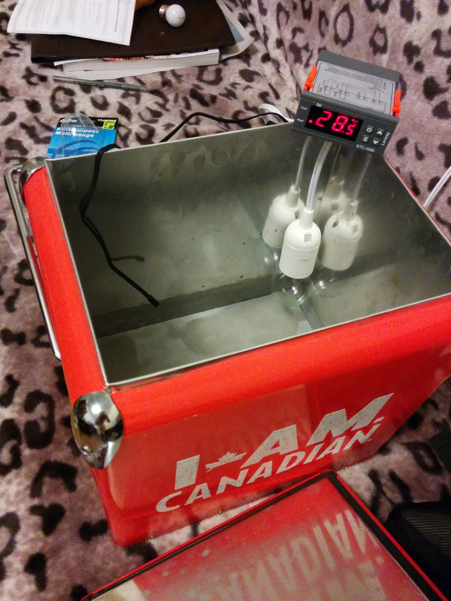
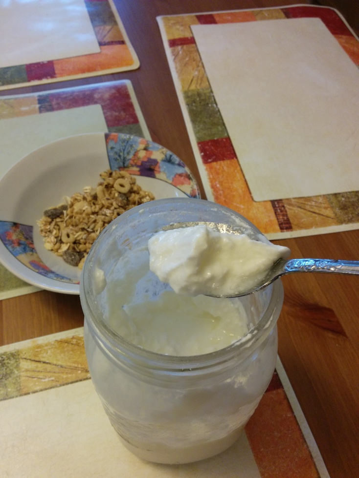
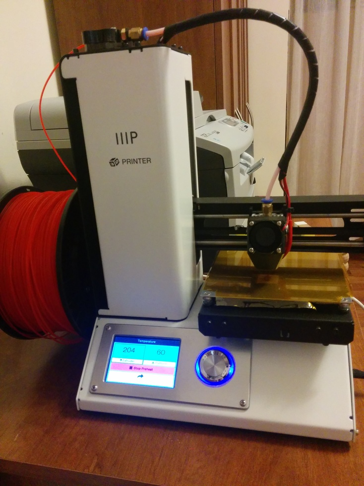
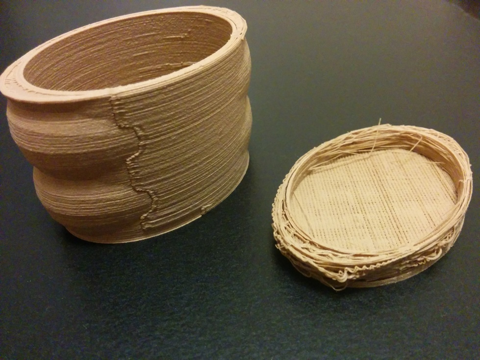

<!doctype html>
<html lang="en">
  <head>
    <meta charset="utf-8">

    <title>PID Control</title>

    <meta name="author" content="Doug Hoyte">

    <meta name="apple-mobile-web-app-capable" content="yes" />
    <meta name="apple-mobile-web-app-status-bar-style" content="black-translucent" />

    <meta name="viewport" content="width=device-width, initial-scale=1.0, maximum-scale=1.0, user-scalable=no, minimal-ui">

    <link rel="stylesheet" href="../reveal.js/css/reveal.css">
    <link rel="stylesheet" href="../reveal.js/css/theme/black.css" id="theme">

    <!-- Code syntax highlighting -->
    <link rel="stylesheet" href="../reveal.js/lib/css/zenburn.css">

    <!-- Printing and PDF exports -->
    <script>
      var link = document.createElement( 'link' );
      link.rel = 'stylesheet';
      link.type = 'text/css';
      link.href = window.location.search.match( /print-pdf/gi ) ? '../reveal.js/css/print/pdf.css' : '../reveal.js/css/print/paper.css';
      document.getElementsByTagName( 'head' )[0].appendChild( link );
    </script>

    <!--[if lt IE 9]>
    <script src="../reveal.js/lib/js/html5shiv.js"></script>
    <![endif]-->

    <style>
      .reveal .slides h1, .reveal .slides h2, .reveal .slides h3 {
        text-transform: none;
      }

      .two-column {
        display: flex;
        flex-wrap: wrap;
      }

      .two-column em {
        margin: 20px;
      }
    </style>
  </head>

  <body>
    <div class="reveal">
      <div class="slides">

<!------------------------------------------------------->


<section data-markdown><script type="text/template">

# PID Control

Doug Hoyte

</script></section>


<section data-markdown><script type="text/template">

# Control Theory

Single-input single-output system

<br><span style="font-size: 50%">(image from wikipedia)</span>

</script></section>


<section data-markdown><script type="text/template">

## Yogurt




</script></section>


<section data-markdown><script type="text/template">

## 3D Printing




</script></section>


<section data-markdown><script type="text/template">

# Control applications

## Temperature regulation

* Reflow ovens for surface-mount soldering
* PCR Thermo-cyclers

## Many others

* Air/water flow rates
* Steering ships/planes
* Servo motor control in robotics
* Biologic processes

</script></section>


<section data-markdown><script type="text/template">

# Terminology 

* **set point**: a desired value (ie temperature)
* **control**: input to your system you can change (ie power applied to heating element)

</script></section>


<section data-markdown><script type="text/template">

# Negative Feedback

**Negative feedback** is the action of compensating for deviations from the desired set point by changing your control value

* If temperature goes up, reduce heat   
* If temperature goes down, increase heat

</script></section>


<section data-markdown><script type="text/template">

# Error Value

The **error value** is the difference between the currently measured value and the desired set point

    error = set_point - measured

</script></section>


<section data-markdown><script type="text/template">

# PID Controller

One of many different ways to influence control values

* <span style="font-size: 150%">P</span>roportional
* <span style="font-size: 150%">I</span>ntegral
* <span style="font-size: 150%">D</span>erivative

</script></section>


<section data-markdown><script type="text/template">

# Proportional

    P = Kp * error[t]

**Kp** is the proportional gain constant

If error is large, correction will be proportionally large too

This term accounts for the error in the **present**

</script></section>


<section data-markdown><script type="text/template">

# Integral

    I = Ki * (error[0] + error[1] + ... + error[t])

(need to multiply by **&Delta;t** if != 1)

**Ki** is the integral gain constant 

If error has been happening for a long time, correction will be proportionally larger

This term accounts for the error in the **past** (sometimes infinite past, sometimes bounded)

</script></section>


<section data-markdown><script type="text/template">

# Derivative

    D = Kd * (error[t] - error[t - 1])

(need to divide by **&Delta;t** if != 1)

**Kd** is the derivative gain constant 

If error correction is increasing rapidly, correction will be proportionally larger   

This term accounts for the error in the **future** (often low-pass filtered, not as commonly used as P+I)

</script></section>


<section data-markdown><script type="text/template">

# Tuning

Tuning is choosing values for **Kp**, **Ki**, and **Kd** via analysis, experiments, or both

Need to balance various competing goals

* Reduce rise time (how quickly do you get to a new set point)
* Reduce settling time (ringing)
* Prevent overshoot of set point
* Minimise total energy expended transitioning between set points

</script></section>


<section data-markdown><script type="text/template">

# 3D Printing G-Code

Once you've figured out some good **Kp**, **Ki**, and **Kd** values, you send g-code to your printer:

    M301 H1 P21 I0.02 D244

`H1` indicates the heater number (`H0` is bed, `H1` is extruder 1, `H2` is extruder 2...)
</script></section>


<section data-markdown><script type="text/template">

# Demo

[Click Here](https://hoytech.github.io/pid-simulation/)

</script></section>


<section data-markdown><script type="text/template">

# sinc

When there is an abrupt change in set point, the "ringing" looks like the `sinc(x) = sin(x)/x` function:


This is not a coincidence.

</script></section>


<section data-markdown><script type="text/template">

# Dealing with noise

Sensor noise is common and can interfere with PID controls, especially the derivative term

Solutions:

* FIR low-pass filters (moving averages, etc)
* IIR low-pass filters (for efficiency)
* Kalman filters

</script></section>


<section data-markdown><script type="text/template">

# Thank you

This presentation:<br/>
[https://hoytech.github.io/presentations/pid/](https://hoytech.github.io/presentations/pid/)

Simulation:<br/>
[https://hoytech.github.io/pid-simulation/](https://hoytech.github.io/pid-simulation/)

</script></section>


<!------------------------------------------------------->


      </div>

    </div>

    <script src="../reveal.js/lib/js/head.min.js"></script>
    <script src="../reveal.js/js/reveal.js"></script>

    <script>

      // Full list of configuration options available at:
      // https://github.com/hakimel/reveal.js#configuration
      Reveal.initialize({
        controls: true,
        progress: true,
        history: true,
        center: true,

        transition: 'none', // none/fade/slide/convex/concave/zoom

        // Optional reveal.js plugins
        dependencies: [
          { src: '../reveal.js/plugin/markdown/marked.js', condition: function() { return !!document.querySelector( '[data-markdown]' ); } },
          { src: '../reveal.js/plugin/markdown/markdown.js', condition: function() { return !!document.querySelector( '[data-markdown]' ); } },
          { src: '../reveal.js/plugin/highlight/highlight.js', async: true, callback: function() { hljs.initHighlightingOnLoad(); } },
        ]
      });

    </script>

  </body>
</html>
